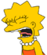

De: La Frikipedia, la enciclopedia extremadamente seria.
De: La Frikipedia, la enciclopedia extremadamente seria. De: La Frikipedia, la enciclopedia extremadamente seria.
|  | ¡LISTA!
Este artículo o sección no es más que una torpe lista. Si crees que vale la pena, edítalo para que tenga párrafos y esas cosas. |
| De la serie Países del planeta tierra: | |||||
| San Marino | |||||
|---|---|---|---|---|---|
| |||||
| Lema: Lo importante es participar (anteriormente "Lo que cuenta es el esfuerzo") | |||||
| Himno: Ay marinero marinero ¡marinero! quién te enseñó a nadar? ¡marinero!
| |||||
|
| |||||
| Capital | Smallville | ||||
| Mayor ciudad | Un cortijo nada más llegar a la derecha | ||||
| Lenguas oficiales | Euskera, Italiano, Chino | ||||
| Gobierno | República de Capitanes | ||||
| Gran Capitán | Subasa | ||||
| Área | Base*Altura/2 | ||||
| Población | Se cuentan con los dedos | ||||
| Moneda | Trueque | ||||
| Zona horaria | Siempre son las 12 | ||||
| Dominio Internet | .sm | ||||
| Código telefónico | Dos envases de yegures unidos por un hilo
| ||||
| Porque coño no estoy en Italia??!! | |||||
Aldea situada a las afueras de Italia por eso que sea el idioma el italiano ,la ostia, que, tiene la desfachatez de llamarse República Serenísima (para que conste que tienen nivel) situada en Italia, que ocupa lo mismo que mi cuarto de baño. Como población reducida esta en peligro de extinción por eso su pájaro oficial es el pájaro Dodo. A pesar de lo que se pensaría no tiene salidaz al mar y su selección de futball es toda una joyita.
Poco o nada que decir. La "selección" tiene una muy baja, por no decir nula, reputación en el mundo.
No se sabe como exactamente cómo ni de dónde salió San Marino, y se cree que a muy pocos les importa, en la clase de historia que se da en la única escuela/secundaria/universidad es la historia de Italia.
  Imperios de Europa Imperios de Europa
|
|---|
| Eslovaquia |
Autor(es):